ЛАБОРАТОРНАЯ РАБОТА № 18
ГЛОБАЛЬНАЯ СЕТЬ INTERNET. ОБЗОР
ОСНОВНЫХ ТЕХНОЛОГИЙ ДОСТУПА
Цель работы — научиться устанавливать сетевые параметры в операционной системе. Провести тестирование скорости соединения с Интернетом и сравнить результаты с типичными результатами других поставщиков Интернета.
Теоретическая часть
Все современные технологии обеспечения доступа в Интернет, в зависимости от способа связи с удаленным абонентом (в данном случае - с интернет-провайдером), можно разделить на три категории:
- беспроводные системы (включающие спутниковые системы, а также системы персональной сотовой связи, обеспечивающие доступ мобильных пользователей);
- оптоволоконные системы (к ним также можно отнести и системы связи на базе коаксиального кабеля, используемые, в частности, в кабельном телевидении);
- традиционные проводные линии связи (подразделяющиеся, в свою очередь, на две большие подгруппы - выделенные линии и телефонные линии с коммутируемым доступом).
Технология DSL
DSL (от анг. Digital Subscriber Loop) - цифровой абонентский шлейф, семья технологий широкополосного доступа в Интернет. Стандартная скорость приёма данных колеблется от 128 Кбит/с до 24,000 Кбит/с в зависимости от используемой технологии DSL и её уровня. В технологии ADSL скорость передачи данных ниже скорости их приёма, зато симметрична для SDSL. Изобретателем модемов DSL был Джозеф В. Лехлайтер, работник фирмы Bellcore, который в 80х гг. продемонстрировал проект конструкции этих устройств.
Локальное подключение коммутируемой телефонной сети общего пользования (Public Switched Telephone Network ) первоначально было запроектировано для голосовой связи и сигнализации - самых старых, основных телефонных услуг POTS, ещё не было понятия обмена данными. По экономическим причинам телефонная система номинально передаёт звуковой сигнал между частотами 300 и 3,400 Гц, что соответствует требованиям в отношении диапазона человеческой речи, чтобы она была ясной и понятной. Услуги, оказываемые через модемы Dial-up, ограничены пропускной способностью канала POTS.
В локальных коммутаторах речевой сигнал подвергается дискретному преобразованию до потока данных 64 Кбит/с в виде 8 битового сигнала, использующего частоты квантования 8,000 Гц, поскольку в соответствии с теорией Найквиста любой сигнал выше 4,000 Гц пропускается телефонной сетью.
Локальное подключение, соединяющее коммутатор с большинством абонентов, способно передавать более высокие частоты, чем 3.4 кГц лимит POTS. Лимит может быть выше в зависимости от расстояния и качества подключения. Технология DSL использует эту более высокую, неиспользуемую полосу соединения путём создания широких каналов 4312.5 Гц, начинающихся между 10 и 100 кГц, в зависимости от конфигурации системы. Распределение каналов продолжается на всё более высоких частотах (до 1.1 МГц для ADSL) до тех пор, пока новые каналы не будут признаны непригодными к использованию. Каждый канал расширен, чтобы его можно было использовать на более чем одном маршруте как в случае соединений POTS. Большее количество пригодных для использования каналов приравнивается к большей доступной полосе, поэтому важными характеристиками являются расстояние и качество линии. Резерв пригодных для использования каналов разделяется на две группы потоков движения, передачи и приёма, на основе предварительно сконфигурированной пропорции. В заложенной группе отдельные каналы скреплены в одну пару циклов, каждый в своём направлении. Как и аналоговые модемы, передатчики DSL постоянно контролируют качество каналов и, в зависимости от того, является ли данный канал полезным или нет, добавляются или удаляются.
Коммерческий успех DSL и подобных технологий в большой степени отражает тот факт, что в последние годы, когда электроника становится более быстрой и дешёвой, стоимость выкапывания траншей для прокладки новых кабелей остаётся по-прежнему высокой. Все технологии DSL используют очень сложные алгоритмы переработки цифрового сигнала, преодолевая ограничения присущие парам проводов. Не так давно стоимость такой прокладки могла быть огромной, но благодаря технологии VLSI, стоимость прокладки DSL на существующих локальных линиях, с мультиплексором DSLAM на одном конце и модемом DSL на другом, требует меньше средств по сравнению с тем, какие могли бы быть при установке новой оптоволоконной линии, при том же маршруте и расстоянии.
Технология DSL используется в большинстве квартир и малых офисов, соответствующие фильтры позволяют одновременно передавать голосовые сигналы и DSL. Модем DSL может использовать ту же абонентскую линию, что и устройства связи на основе POTS, включая факсы и аналоговые модемы. В течение каждого промежутка времени только один модем DSL может использовать линию абонента. Стандартным методом предоставления доступа DSL нескольким компьютерам в одном помещении является применение маршрутизатора (роутера), который устанавливает связь между модемом DSL и локальной сетью ETHERNET либо Wi-Fi. Для установки связи между абонентом и Интернет-провайдером используются каналы потоков передачи и приёма.
Технология WLAN
WLAN - Wireless Local Area Network - в настоящее время это, пожалуй, самый популярный и чаще всего применяемый метод беспроводного доступа в Интернет для конечных пользователей. Это решение не относится к тем, которые обеспечивают высокое качество услуг (QOS,) однако стоимость инвестиций в устройства полностью компенсирует этот недостаток. Оборудование, особенно на 2,4 ГГц, относительно дёшево и цены на него продолжают падать. В числе прочего и по этой причине оно охотно используется малыми Интернет-провайдерами для решения проблемы последней мили.
Стандарт IEEE 802.11 популяризируется комитетом по стандартам локальных и городских сетей (LMSC - Local and Metropolitan Area Networks Standards Committee) IEEE Computer Society. Перед тем как его утвердили в июне 1997г., ему предшествовало шесть рабочих версий. В окончательной форме он был признан и как стандарт IEEE, и как стандарт ISO/IEC. Это позволило большому количеству производителей и продавцов разработать широкий спектр устройств для общедоступной полосы ISM (Industrial, Scientific and Medical) и UNII (Unlicensed National Information Infrastructure).
В настоящее время преобладает несколько стандартов беспроводных сетей WLAN. Самые популярные из них это 802.11а, 802.11b и 802.11g. С учётом этого определено нескольких физических уровней, позволяющих проектировщику выбрать один из них в зависимости от требований системы или потребностей будущих пользователей. Стандарт IEEE 802.11 определяет два самых низких уровня модели беспроводных компьютерных сетей, работающих с производительностью в радио канале до 2 Мбит/с. Он предусматривает два вида радио-интерфейса: работающий в полосе 2,4 ГГц и в инфракрасном диапазоне. Для первоначальной спецификации IEEE 802.11 была характерна низкая мощность и проблемы с совместимостью.
Опубликованная в 1999 года спецификация 802.11b определяла новый уровень PHY, который обеспечивал большую битовую скорость с применением DSSS (Direct Sequence Spread Spectrum) в диапазоне 2,4 ГГц. Устройства, работающие в этом стандарте, могут передавать данные со скоростью до 11 Мб/с. Спецификация 802.11а была представлена в 2001 году и определяет уровень PHY, действующий в полосе 5 ГГц. Максимальная пропускная способность возросла до 54 Мб/с, в т.ч., благодаря применению нового метода модуляции OFDM (Orthogonal Frequency Division Multiplexing). 802.11g - это самая новая спецификация уровня PHY, работающая в диапазоне 2,4 ГГц и использующая технологию рассеивания спектра OFDM.
Оптоволоконная технология
FITL (Fiber In The Loop) - оптоволоконная система абонентской сети Последним предложением мировых телекоммуникационных концернов являются оптико-волоконные абонентские системы, позволяющие одновременно предоставлять различные телекоммуникационные и телевизионные услуги. К системам этого типа относится известная система под названием FITL, т.е. Fiber In The Loop (пер. оптическое волокно в абонентской линии). FITL позволяет сконструировать общую сеть для обслуживания абонентов телефонных и телевизионных линий с ограниченным использованием либо без медных кабелей, применявшихся до сих пор. Системы FITL предназначены для удовлетворения постоянно растущих требований к операторам публичных телекоммуникационных сетей. Кроме оказания основных телекоммуникационных услуг, таких как телефонная связь, всё чаще говорится об оказании услуг, выходящих за пределы стандартного перечня, таких как услуги мультимедиа: видео по требованию, видеоконференции, видеотелефон, быстрый доступ в сеть Интернет, электронные покупки и тому подобное. Система FITL широко использует оптико-волоконную технологию, признанную и проверенную в кабельных линиях теле-трансмиссии. Она предполагает использование оптических носителей в основном в магистральной и распределительной части традиционной сети доступа. В зависимости от расположения оптической сетевой единицы ONU (Optical Network Unit) различают три архитектуры сети: FTTB (Fibre To The Building), FTTC (Fibre To The Curb) и FTTH (Fibre To The Home). Название архитектуры указывает на место расположения ONU. Все эти решения для доступа к узлу услуг могут использовать транспортную часть телекоммуникационной сети, которая также основана на оптико-волоконном кабеле.
Технология DVB-S
DVB-S является в настоящее время одним из самых популярных методов спутникового доступа в Интернет. Как и у каждого канала, у DVB-S есть свои достоинства и недостатки, обусловленные непосредственно физической формой и законами, которым она подчиняется. К самым значительным достоинствам можно отнести:
- Всеобщее покрытие - эта технология при использовании соответствующих созвездий размещения спутников на орбитах (розеткой, полярные) в состоянии обеспечить практически всеобщее покрытие, включая зоны в больших географических широтах (полюса Земли). К сожалению, в настоящий момент для коммерческого использования применяется геостационарная орбита, которая обеспечивает доступ в зонах умеренных географических широт (Европа и т.д.).
- Эластичность - очевидно, что технология основана на беспроводной радиопередаче, вследствие чего клиент свободен от любых кабелей, соединяющих его с оператором. В результате это позволяет использовать переносные (работающие не в движении, но с возможностью переноса) и мобильные (с возможностью работы в движении) терминалы доступа, что гарантирует эластичность путём адаптации системы к потребностям клиентов.
Существует нескольких проблем, связанных с доступом этого вида. Оператор, прежде всего, должен гарантировать постоянный доступ к своей сети (постоянный доступ к услугам и непрерывность предоставления данной услуги). Он также обязан гарантировать соответствующее качество оказываемых услуг (QoS) и постоянный контроль этого параметра. Невыполнение этих условий может привести к тому, что сегодняшний клиент с высокими требованиями (напр. банк) вынужден будет воспользоваться услугами другого оператора. Следующая проблема - максимальная мощность, излучаемая приёмно-передаточной системой (EIRP), которая строго назначается организациями, контролирующими область телекоммуникации на территории данного государства. Остальные достаточно важные аспекты - это необходимая вместимость системы и обеспечение необходимой ширины полос в соответствующих диапазонах частоты.
Технология WiMAX
WiMAX является беспроводной технологией доступа в Интернет, обеспечивающей широкополосный доступ к сети конечным пользователям в основном на территории города. Она основана на американском стандарте IEEE 802.16 и европейском ETSI HiperMAN. WiMAX представляет собой альтернативу проводным сетям особенно в зонах со слабо развитой структурой телекоммуникационных сетей. WiMAX обеспечивает оптимальное решение т.н. проблемы последней мили, то есть подключения канала к конечному клиенту. Оба стандарта (европейский и американский) позволяют создать множество различных конфигураций базовых станций, что в результате может привести к ситуации, когда устройства разных производителей будут несовместимы. В числе прочих по этой причине задачей WiMAX является унификация метода конфигурации устройств, чтобы решить эту проблему. Обсуждаемые решения должны обеспечить совместимость устройств, как при наличии непосредственной визуальной видимости антенн, так и без неё, и дать операторам возможность расширить спектр услуг за счёт мобильного доступа в Интернет, создавая конкурентоспособные решения (VoIP) для сети мобильной связи. Описанные в этой статье решения касаются стандарта 802.16, поэтому целесообразно начать с представления этого стандарта. Стандарт создавался, начиная с 1999 года и, как и можно ожидать, за это время появилось несколько его версий, из которых в настоящий момент действуют две:
- 802.16-2004 завершенный в 2004 году, предлагает доступ к сети для терминалов не находящихся в движении.
- 802.16e завершенный в 2005 году, предлагает доступ к сети для терминалов как стационарных, так и мобильных. Сертификация устройств, соответствующих этому стандарту, должна начаться в 2007 году. Как уже упоминалось ранее, технология не требует непосредственной видимости антенн, то есть использует модель распространения радиоволн NLOS (анг. Non Line of Sight). Применение этой модели поставило перед создателями стандарта множество проблем, самой значительной из которых было увеличение дальности покрытия системы. Поскольку при отсутствии оптической видимости имеет место многолучевое распространение, то есть до приёмника доходит несколько разных сигналов, с разным опозданием и степенью затухания, и с иной поляризацией, чем при непосредственном сигнале.
Практическая часть
1. Настройка Windows XP для работы по коммутируемому беспарольному доступу
Создание соединения.
1. Зайдите в меню создания нового соединения:
Пуск -> Панель управления -> Cетевые подключения -> Создание нового соединения
2. В появившемся окне "Мастер новых подключений" нажмите кнопку "Далее"
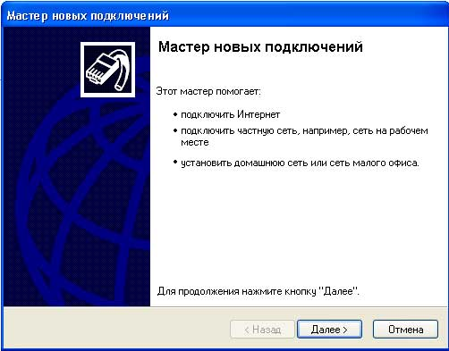
3. В окне "Тип сетевого подключения" выберите пункт "Подключить к Интернету" и нажмите кнопку "Далее" .
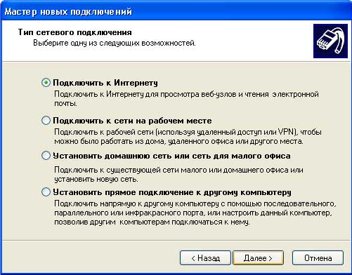
4. В следующем окне выбираете пункт "Установить подключение вручную" и нажимаете кнопку "Далее"
.
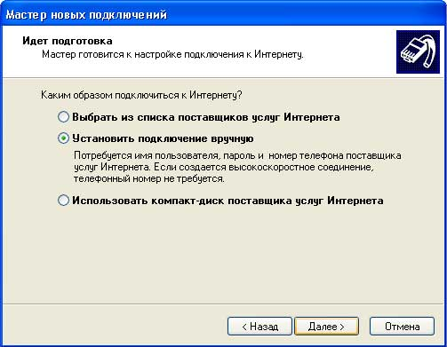
5. В окне "Подключение к Интернету" выбираете пункт "Через обычный модем" и нажимаете кнопку "Далее"
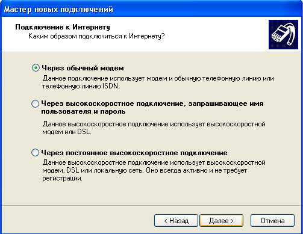
6. В окне "Имя подключения" вводим любое имя создаваемого нами соединения, например "belpak" и жмем кнопку "Далее"
7. В окне "Введите телефонный номер" вводим дозвоночный номер и жмем кнопку "Далее"
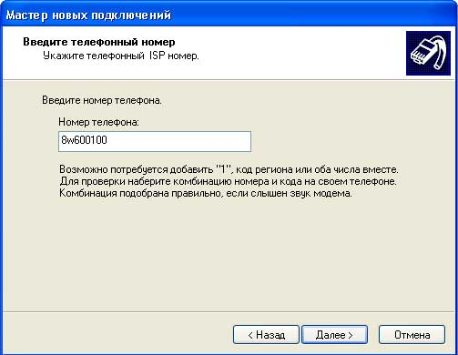
8. В окне "Детали учетной записи в Интернете" вводим любое имя, убираем опцию "Включить брандмауэр для подключения к Интернету" и жмем кнопку "Далее"
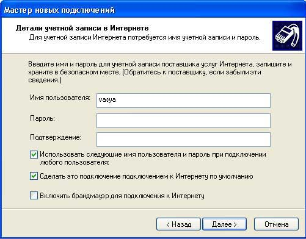
9. В окне "Завершение работы мастера новых подключений" жмем кнопку "Готово"
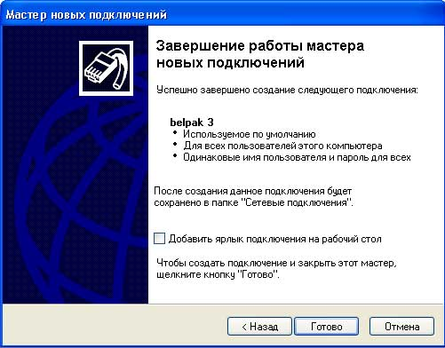
На этом создание соединения завершено.
1.1. Настройка параметров соединения.
1. Зайдите в свойства созданного соединения:
Пуск -> Панель управления -> Cетевые подключения -> Правой кнопкой мышки на созданное соединения и выбираем пункт меню "Свойства"
2. В появившемся окне выключаем опцию "Использовать правила набора номера"
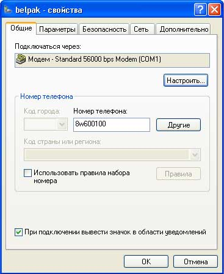
3. Переключаемся на закладку "Сеть", выбираем протокол TCP/IP и заходим в "Свойства"
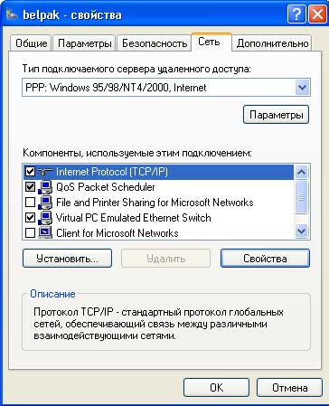
4. В появившемся окне вводим адреса DNS-серверов: 193.232.248.2 и 193.232.248.45, при работе со статическим IP-адресом необходимо также ввести Ваш IP-адрес, затем жмем кнопку "OK".
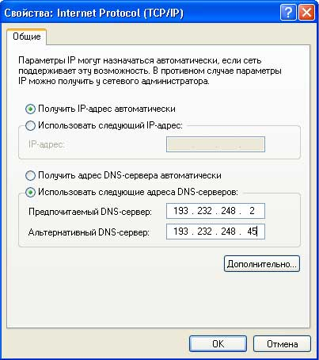
На этом настройка параметров соединения завершена, жмем кнопку "OK".
1.2. Запуск соединения.
1. Запускаем созданное соединение:
Пуск -> Панель управления -> Cетевые подключения -> Нажимаем два раза на созданное соединение
2. В появившемся окне вводим любое имя и нажимаем кнопку "Вызов"
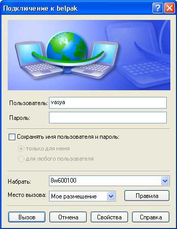
2. Настройка локальной сети в Windows XP
1. Перейдите в папку Пуск > Настройка > Панель управления > Сетевые подключения (или Панель управления > Сетевые подключения). Найдите ярлык Подключение по локальной сети, кликните по нему правой клавишей и в открывшемся меню выберите пункт Свойства.
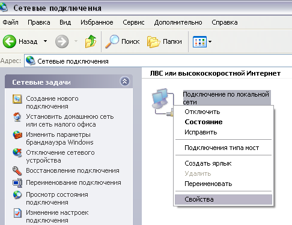
2. В открывшемся окошке выберите из списка компонентов Протокол Интернета (TCP/IP), кликните по нему левой клавишей мыши и нажмите кнопку Свойства.
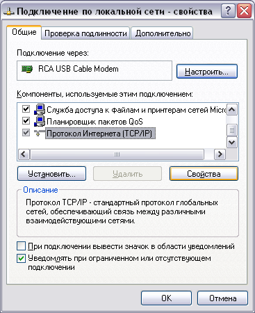
3. В открывшемся окне установите параметры, как указано на иллюстрации (число, следующее за последней точкой в IP-адресе может варьироваться на ваше усмотрение в пределах от 2 до 254, но IP-адрес не должен совпадать с IP-адресами других компьютеров и устройств).
Нажмите OK, окошко закроется. В открытом окошке также нажмите OK. Настройка подключения по локальной сети завершена.
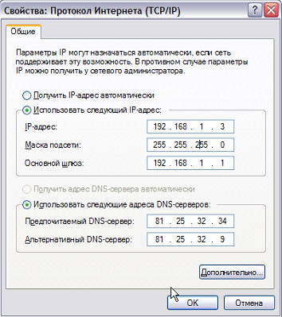
Так же можно получить IP-адрес автоматически.
3. Настройка беспроводной сети в Windows XP
С Ноутбука или Карманного компьютера, можно подключиться к Интернет если у Вас есть:
- сотовый телефон GSM с GPRS.
- адаптер WiFi он же IEEE 802.11a, IEEE 802.11b или IEEE 802.11g;
1. Подключение по GPRS.
Соединив ноутбук с телефоном через ИК-порт, Bluetooth-соединение или через специальный кабель на COM или USB порт компьютера, необходимо создать подключение к Интернету (Панель управления -> Сеть и удаленный доступ к сети). Телефон, выполняя функцию модема, свяжется по специальному номеру с Вашим оператором сотовой связи и при входе в Интернет станет транслировать соединение на ноутбук.
Следует иметь ввиду, что по скорости и надежности соединение через сотовый телефон уступает даже модемному соединению по коммутируемым телефонным линиям.
2. Подключение по WiFi.
Для него нужно, чтобы точка доступа WiFi находилась на расстоянии не более 100 м от Вашего ноутбука. На практике, в городских условиях расстояние, увы, всего 20 - 50 м.
1. В окне Сетевые подключения нажмите правую кнопку мыши на значке Беспроводное сетевое соединение и в ниспадающем меню выберите Свойства.
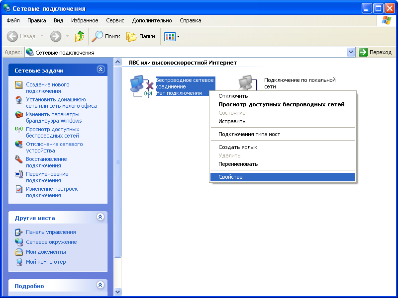
2. На вкладке Общие удостоверьтесь, что стоят галочки на кнопке-флажке При подключении вывести значок в области уведомлений и на кнопке-флажке Уведомлять при ограниченном или отсутствующем подключении (для удобства).

3. Вверху диалогового окна Беспроводное сетевое соединение - свойства нажмите вкладку Беспроводные сети.
Если там нет вкладки Беспроводные сети, то внизу окна Беспроводное сетевое соединение - свойства нажмите кнопку OK.
В меню Пуск нажмите Настройка > Панель управления.
Затем в окне Панель управления дважды щелкните на значке Администрирование > Службы.
Удостоверьтесь, что служба под именем Wireless Zero Configuration (или Беспроводная настройка) в состоянии Работает.
Иначе дважды щелкните на Wireless Zero Configuration и в окне свойств службы нажмите кнопку Пуск, а затем кнопку OK.
Затем снова в окне Сетевые подключения нажмите правую кнопку мыши на значке Беспроводное сетевое соединение и выберите Свойства.
На вкладке Беспроводные сети удостоверьтесь, что стоит галочка на кнопке-флажке Использовать Windows для настройки сети.
Затем в секции Предпочитаемые сети для продолжения установки нажмите кнопку Добавить.
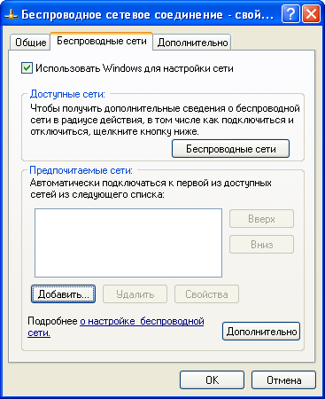
4. На вкладке Связи в поле Сетевое имя (SSID) напечатайте MIAN (все буквы - заглавные).
Отметить галочкой пункт "Подключиться, даже если сеть не ведет вещание"
В поле Проверка подлинности в ниспадающем меню выберите WPA.
Если там нет WPA, то обновите драйвер беспроводного сетевого адаптера.
Затем в поле Шифрование данных в ниспадающем меню выберите TKIP.
Удостоверьтесь, что галочка на кнопке-флажке Это прямое соединение компьютер-компьютер; точки доступа не используется не стоит.
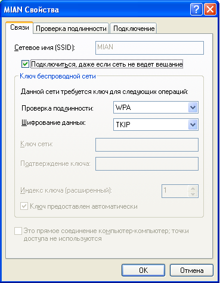
5. Вверху диалогового окна Свойства беспроводной сети нажмите вкладку Проверка подлинности.
В поле Тип EAP в ниспадающем меню выберите Protected EAP (PEAP).
Снимите галочку с кнопки-флажка Проверять подлинность как у компьютера при доступности сведений о компьютере.
Удостоверьтесь, что галочка на кнопке-флажке Проверять подлинность как у гостя при отсутствии сведений о компьютере или пользователе не стоит.
Затем нажмите кнопку Свойства для продолжения установки.
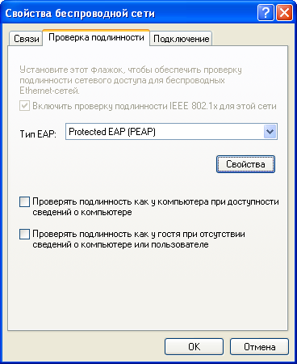
6. В диалоговом окне Защищенные свойства EAP снимите галочку с кнопки-флажка Проверять сертификат сервера.
Удостоверьтесь, что в поле Выбор метода проверки подлинности стоит Secured password (EAPMSCHAP v2).
Поставьте галочку на кнопке-флажке Включить быстрое переподключение.
Затем нажмите кнопку Настроить.
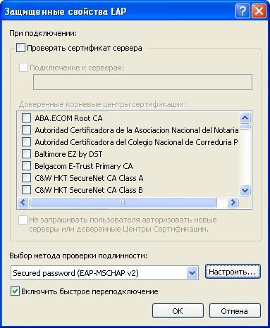
7. В диалоговом окне Свойства EAP MSCHAPv2 снимите галочку с кнопки-флажка Автоматически использовать имя входа и пароль Windows (и имя домена, если существует).
Нажмите кнопку ОК.
8. В диалоговом окне Защищенные свойства EAP нажмите кнопку ОК.
Вверху диалогового окна Свойства беспроводной сети нажмите вкладку Подключение.
Удостоверьтесь, что стоит галочка на кнопке-флажке Подключаться, если сеть находится в радиусе действия.
Нажмите кнопку ОК.
9. В диалоговом окне Беспроводное сетевое соединение - свойства нажмите кнопку OK, чтобы закончить настройку соединения.
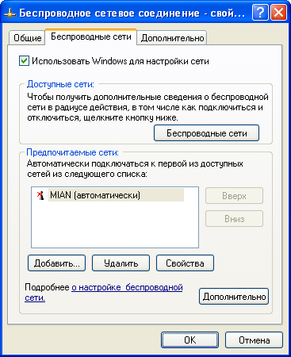
10. Windows XP впервые попытается соединиться, и в панели задач появится всплывающая подсказка.
Нажмите на этой всплывающей подсказке.
11. В окне Ввод учетных данных в полях Имя пользователя и Пароль напечатайте соответствующие данные.
Поле Домен оставьте пустым.
Нажмите кнопку OK.
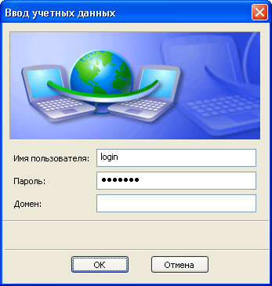
Если Вы пользуетесь Windows 98/2000 придется воспользоваться ПО прилагаемом к WiFi адаптеру. Обычно это русифицированная программа и проблем возникнуть не должно.
Проверять состояние подключения можно с помощью иконки, которая должна появиться в системном трее. Щелкнув по ней, вы можете увидеть состояние вашего подключения и мощность сигнала.
4. Тестирование скорости соединения с Интернетом.
В этой лабораторной работе Вам так же предлагается провести тестирование скорости соединения с Интернетом и сравнить результаты с типичными результатами других поставщиков Интернета. Speedtest представляет собой приложение для тестирования скорости и качества соединения с Интернетом.
1. Зайдите на сайт http://www.testskorosti.ru/
Приложение проверяет 3 основных параметра:
1.Download Speed – скорость приёма данных из Интернета на Ваш компьютер
2.Upload Speed - скорость передачи данных с Вашего компьютера в Интернет.
3.Ping (latency) - время в миллисекундах, необходимое для передачи в Интернет и приёма обратно малого пакета данных.
2. Чтобы начать тест, выберите сервер, расположенный ближе всего к Вашему месту жительства и нажмите кнопку "Begin test" – «Начать тест».
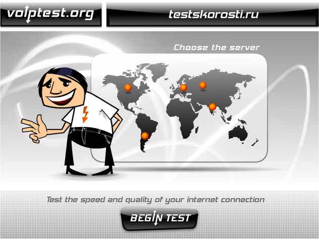
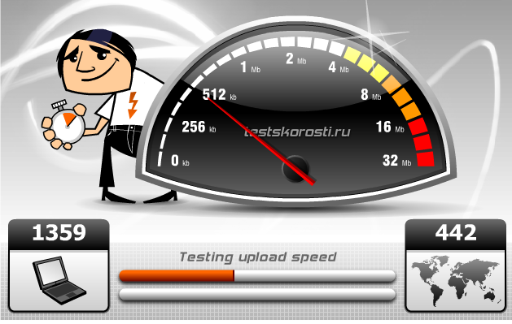
3. Подождите пока произойдет тестирование и Вы увидите результаты.
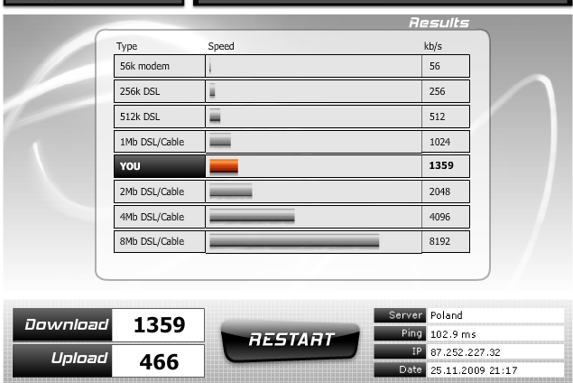
4. Заполните таблицу, вписав в нее IP-адрес, скорость приёма данных из Интернета на Ваш компьютер, скорость передачи данных с Вашего компьютера в Интернет, время в миллисекундах, необходимое для передачи в Интернет и приёма обратно малого пакета данных. Сравните Ваши результаты с результатами других поставщиков Интернета, сделайте выводы.
|
IP |
Download Speed, kb/s |
Upload Speed, kb/s |
Ping (latency), ms |
|
|
|
|
|
Контрольные вопросы
1. Какие существуют технологии обеспечения доступа в Интернет, в зависимости от способа связи с удаленным абонентом?
2. Что такое DSL? Перечислите все разновидности.
3. Что такое WLAN? Перечислите все разновидности.
4. Что такое FITL? Перечислите все разновидности.
5. Что такое DVB-S? Перечислите все разновидности.
6. Что такое WiMAX? Перечислите все разновидности.
7. Что такое OFDM? Перечислите все разновидности.
8. Перечислите последовательные этапы настройки подключения беспарольного доступа в Интернет.
9. Перечислите последовательные этапы настройки подключения локальной сети.
10. Перечислите последовательные этапы настройки подключения беспроводного доступа в Интернет.